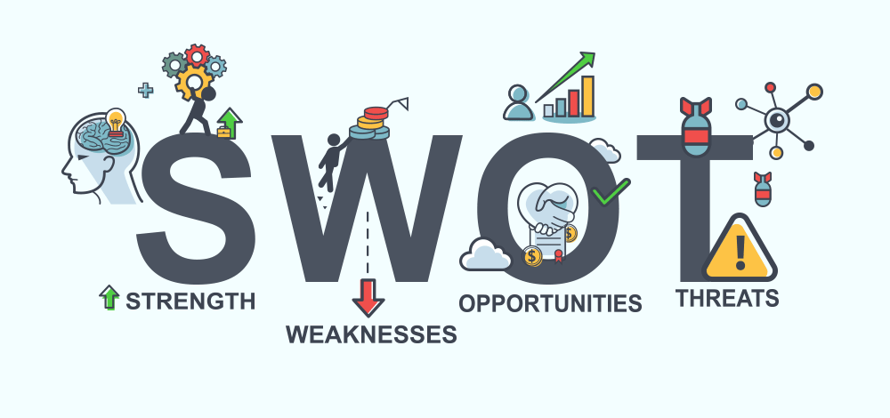

SWOT analysis

Strengths: Responsible, Empathetic, Observative
Weaknesses: Self-doubt,Disorganized, Unfocused
The analysis of my personal strengths and weaknesses helped me focus on my strengths and minimize my weaknesses and their effect. By doing this, I will be able to improve my personal skills in the work field. I can focus on my personal growth and attempt providing the necessary skills that employers are seeking out in their employees. So I can have better job opportunities coming my way.